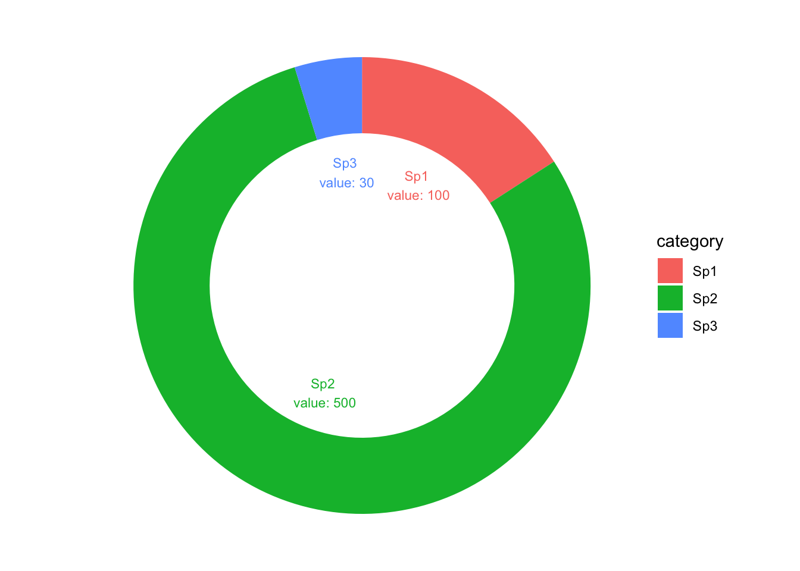

Chapter 12 Ring chart (alternative to the pie chart)
An alternative method of naming ring chart are “Donut chart” or “Circle chart”. It is a circular statistical graphic which is divided into slices to illustrate numerical proportion. The ring chart is a variation of the pie chart, with a hole in the center. The ring chart allows for a better visual comparison of the proportions of the data.
# load library
library(ggplot2)
# Create test data.
data <- data.frame(
category=c("Sp1", "Sp2", "Sp3"),
count=c(100, 500, 30)
)
# Compute percentages
data$fraction = data$count/sum(data$count)
# Compute the cumulative percentages
data$ymax = cumsum(data$fraction)
# Compute the bottom of each rectangle
data$ymin = c(0, head(data$ymax, n=-1))
data # Note the ymin and ymax columns and their values## category count fraction ymax ymin
## 1 Sp1 100 0.15873016 0.1587302 0.0000000
## 2 Sp2 500 0.79365079 0.9523810 0.1587302
## 3 Sp3 30 0.04761905 1.0000000 0.9523810# Make the plot
ggplot(data, aes(ymax=ymax, ymin=ymin, xmax=4, xmin=3, fill=category)) +
geom_rect() +
coord_polar(theta="y") + # Remove the last two lines by adding a hashtag in from of the line to understand how the chart is built initially
xlim(c(1, 4))+ # Try to remove that to see how to make a pie chart (note that his creates the donut chart)
theme_void() # Remove the axis and the grid
12.0.1 Adding values
We can add values to donut chart by adding the following code: Compute a good label
- data\(label <- paste0(data\)category, “value:”, data$count)
# load library
library(ggplot2)
# Create test data.
data <- data.frame(
category=c("Sp1", "Sp2", "Sp3"),
count=c(100, 500, 30)
)
# Compute percentages
data$fraction = data$count/sum(data$count)
# Compute the cumulative percentages
data$ymax = cumsum(data$fraction)
# Compute the bottom of each rectangle
data$ymin = c(0, head(data$ymax, n=-1))
data # Note the ymin and ymax columns and their values## category count fraction ymax ymin
## 1 Sp1 100 0.15873016 0.1587302 0.0000000
## 2 Sp2 500 0.79365079 0.9523810 0.1587302
## 3 Sp3 30 0.04761905 1.0000000 0.9523810# Compute label position
data$labelPosition <- (data$ymax + data$ymin) / 2
# Compute a good label
data$label <- paste0(data$category, "\n value: ", data$count)
# Make the plot
ggplot(data, aes(ymax=ymax, ymin=ymin, xmax=4, xmin=3, fill=category)) +
geom_rect() +
coord_polar(theta="y") + # Remove the last two lines by adding a hashtag in from of the line to understand how the chart is built initially
xlim(c(1, 4))+ # Try to remove that to see how to make a pie chart (note that his creates the donut chart)
theme_void()+ # Remove the axis and the grid
geom_text( x=2.5, aes(y=labelPosition, label=label, color=category), size=3)
12.0.2 Example of why PIE chart should NOT be used
There is a good example of why pie chart should not be used in the following link: https://www.tableau.com/blog/5-unusual-alternatives-pie-charts
Many visual experts argue that pie charts are not the best way to represent data. The main reason is that it is difficult to compare the size of the slices. The human eye is not good at comparing angles. The ring chart is a good alternative to the pie chart. It is easier to compare the size of the slices. The ring chart is a good way to represent data when the number of slices is small. When the number of slices is large, it is better to use a bar chart or a line chart.
In the link above some good examples are shown why pie chart are problematic and some alternatives explained.